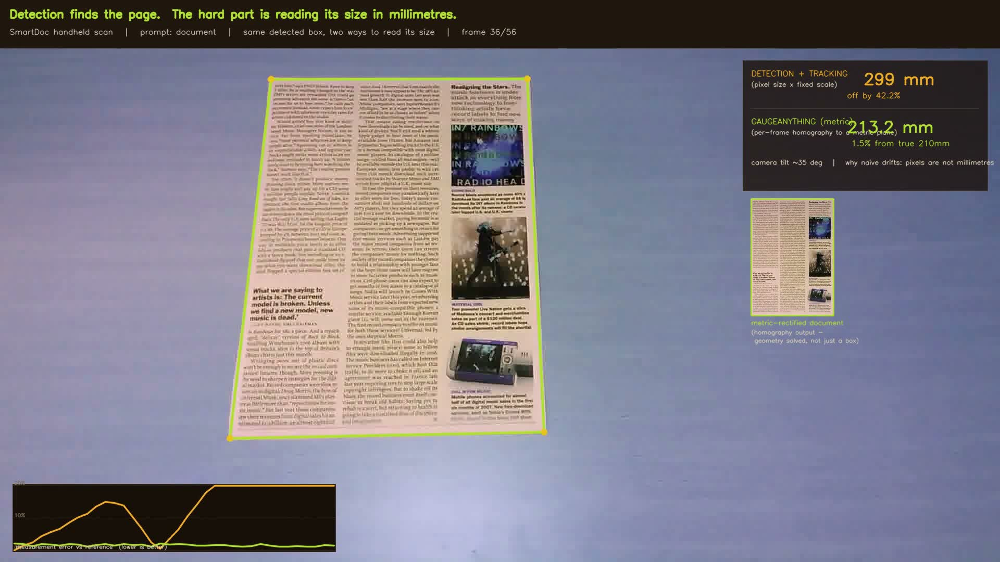

@misc{gaugeanything2026,
title = {GaugeAnything: Promptable Quantitative Inspection for Industrial Micro-Vision},
author = {Joo, Hyunwoo},
year = {2026},
url = {https://github.com/falcons-eyes/GaugeAnything}
}Evidence
One Grammar, Many Physical Quantities — Each Audited
Different surfaces, different units, one promptable measurement layer. Four representative cases below; the full audited set is in GaugeBench.

crack → physical width (μm)
23.2 μm median
Promptable image → signal pipeline on krkCMd, against manually measured
physical ground truth — reading width from mask geometry costs 4–6×.

industrial part → dimension (mm)
2.5% median error
Promptable part measurement on T-LESS CAD ground truth, statistically
indistinguishable from the perfect-mask ceiling (2.83%).

known object → scale (mm)
1.74% mean, pass@5% 100%
Leave-one-out consistency over 22 real photos — the segmentation →
diameter chain on real imagery, no markers.

document → A4 scale (mm)
1.5% median edge error
Promptable detected quad on handheld video (gate pass 96%), vs 10–17% for
naive scaling — the live demo above.
…and crack segmentation (2.44× classical), defect diameter, counting, and dynamic scenes — full coverage map, protocols, and leaderboard in GaugeBench · paper.